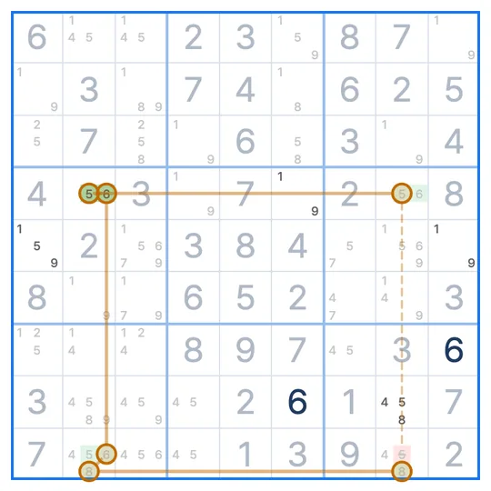

SUDOKU TECHNIQUE · 사슬 계열
AIC 사슬
AIC · Alternating Inference Chain · 교대 추론 사슬
AIC 사슬(Alternating Inference Chain)은 여러 숫자의 후보를 강한 연결과 약한 연결로 번갈아 이은 사슬에서, 두 끝 중 하나는 반드시 참이라는 점으로 두 끝을 모두 보는 칸의 후보를 지우는 스도쿠 기법이에요.
- 보는 숫자
- 여러 개
- 잇는 것
- 강한·약한 연결을 번갈아
- 지우는 곳
- 두 끝을 모두 보는 칸
AIC 사슬 모양
사슬은 2행 1열의 5에서 시작해 5행 2열의 5에서 끝나요. 실선은 강한 연결(한쪽이 아니면 다른 쪽), 점선은 약한 연결(둘 다일 수는 없음)이에요. 숫자 5로 가다가 칸 안에서 8로 바꾸고, 다시 5로 돌아와요.
왜 지울 수 있나요?
시작인 2행 1열의 5가 거짓이라고 해 볼게요. 그러면 연결을 따라 차례로 정해져요.
따라가면 끝인 5행 2열이 5가 돼요. 즉 두 끝 중 하나는 반드시 5예요. 그래서 두 끝을 모두 보는 칸에서 5를 지워요. 2행 1열과 같은 박스이면서 5행 2열과 같은 열인 3행 2열, 2행 1열과 같은 열이면서 5행 2열과 같은 박스인 6행 1열이에요.
AIC 사슬 찾는 순서
- 강한 연결을 찾아요. 후보가 두 개뿐인 칸(그 칸의 두 숫자), 또는 한 숫자가 두 칸뿐인 줄·박스예요.
- 강한 연결 끝에서 약한 연결(같은 칸의 다른 숫자, 같은 줄·박스의 같은 숫자)로 넘어가 다음 강한 연결을 이어요.
- 사슬이 강한 연결로 시작해 강한 연결로 끝나면, 두 끝을 모두 보는 칸에서 지워요. 두 끝이 다른 숫자면, 한 끝 칸에서 다른 끝의 숫자를 지울 수 있는 경우도 있어요.
X-사슬, XY-사슬, W-윙, 스카이스크래퍼도 모두 AIC의 특별한 모양이에요.
자주 헷갈리는 점
X-사슬과 뭐가 달라요?
X-사슬은 숫자 하나만 쓰는 AIC예요. AIC는 칸 안에서 숫자를 바꿔 가며 이을 수 있어요.
사슬을 어떻게 시작해요?
강한 연결이 많은 숫자나, 후보 두 개짜리 칸이 몰린 곳에서 시작하면 찾기 쉬워요.
너무 길면 어떡해요?
길어도 원리는 같아요. 스도쿠 리그 힌트는 고리 하나씩 짚어 주니 따라가 보세요.
비슷한 기법
스도쿠 리그 앱에서
막히면 힌트가 AIC 사슬을 보여줘요
풀다가 막혀 힌트를 누르면, 사슬을 한 고리씩 보드 위에 그려서 보여줘요. 기법 연습에서는 실제 문제 위에서 AIC 사슬 수업을 들을 수 있어요. 첫 판에서 모양과 이유를 같이 보고, 다음 판에서는 직접 찾아봐요.
